昨年の北欧旅行で海外旅行に目覚めてしまい、2011年6月3日から２泊３日で、今度は香港へと足を延ばしてみました。もちろんムルモも一緒に(^^)。
香港は６月から８月までが雨季となり、毎日気温は３０度以上。ものすごく暑かったですが、街はにぎやかで気温以上に熱いものを感じました。
それでは写真とともにレポートいたします！
ちょっと長いですが、ぜひ最後までご覧くださいね。
・・・ってその前に、香港がどの辺りに位置するのかを先に紹介いたします。かくいう私も、旅行計画を立てるまで、香港の具体的な位置をよく分かっていなかったりします。
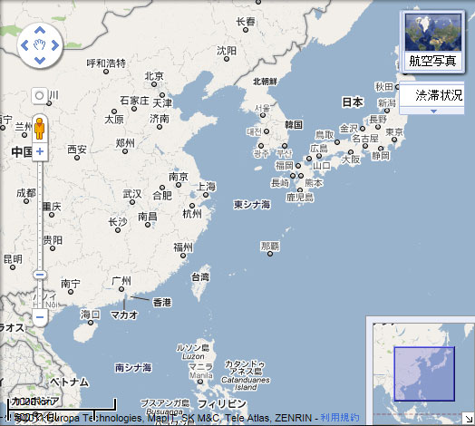
日本から南西の方向、台湾を超えた場所に香港があります。飛行機だと４時間半くらいで、日本との時差は１時間（日本の方が１時間早い）。
2011年6月3日(金)
飛行機は１８時の便ですが、ツアーの集合時間が結構早めだったので、１３時過ぎには自宅を出ていました(^^;。日暮里から京成スカイライナーで成田空港へと向かいます。
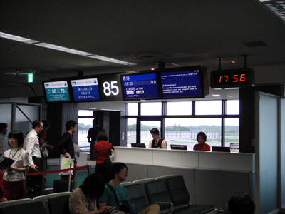
空港の搭乗口に到着～。
行きの飛行機は満員でした。
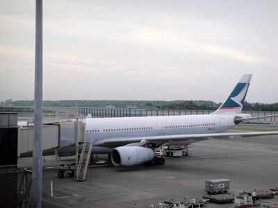
搭乗する飛行機はキャセイパシフィック航空。
香港を拠点とするイギリス系航空会社だそうです。
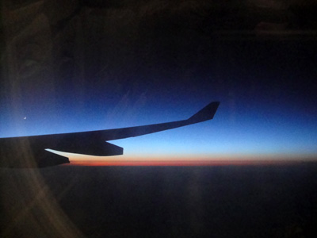
香港到着は２２時なので、途中できれいな夕焼けを
見ることができました♪
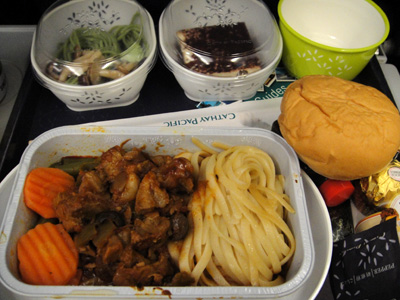
機内食はなかなか美味しかったです。
左上は蕎麦ですが、わさびが超山盛り(^^;。
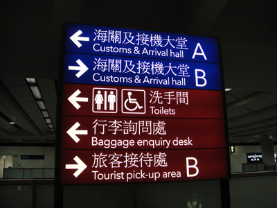
香港に到着～。
空港の案内も当たり前ですが中国語です。
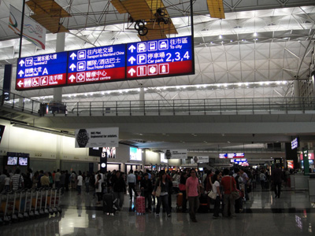
２２時到着なのに空港はすごい人の数！
さすがはアジアを代表するハブ空港といったところでしょうか。
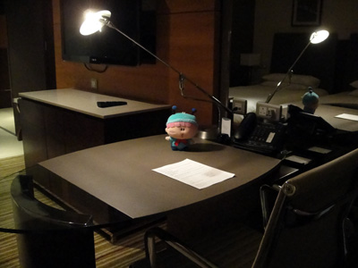
０時手前に何とかホテルに到着～。
宿泊先のハイアットリージェンシーは部屋が広くて、
サイト更新作業が出来そうなデスクまでありました(^^;。
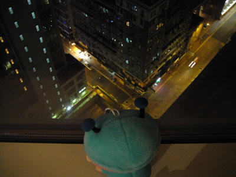
ホテル１４階から街を見下ろします。
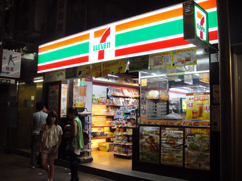
ホテルの近所には何とセブンイレブンが！
日本でも売ってる商品がいろいろありましたよ。
2011年6月4日(土)
２泊３日といいつつ、初日と最終日は飛行機での移動で終わってしまうので、２日目にすべてを詰め込みます！ この２日目の計画が本当に大変でした。
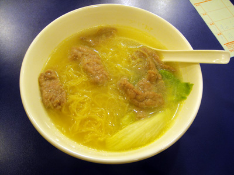
香港名物の麺料理で朝ごはん♪
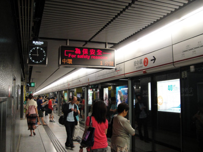
ホテル付近の尖沙咀駅から地下鉄に乗ります。
日本とほとんど同じ光景ですね。
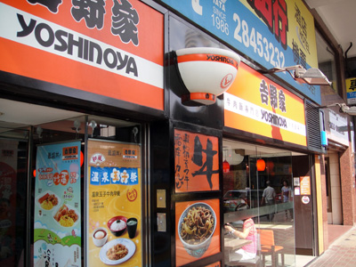
中環(centre)駅の付近に吉野家発見！
なかなか繁盛していました。

中環駅近くのスタチュー・スクエアの広場から
摩天楼と一緒に記念撮影♪
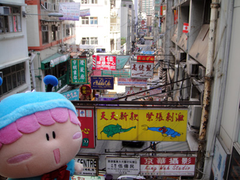
２つ目の名所・ヒルサイド・エスカレーターから
香港の裏路地を見下ろしてみました。
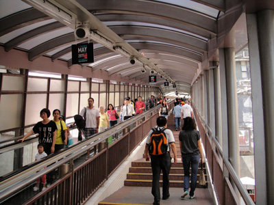
丘の上に高層マンションが建ち並んでいて、
そこへ向かうエスカレターはどこまでも続きます。
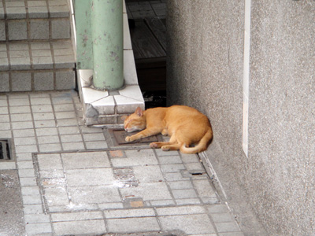
丘の上へ向かう途中で猫が昼寝していました(^^;
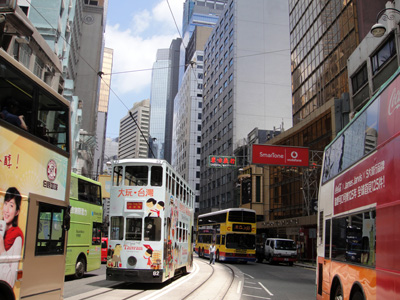
香港と言えばトラム（路面電車）も有名です。
トラムもバスもみんな２階建てなのです。
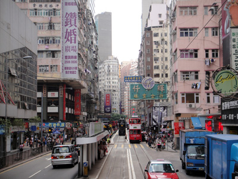
トラムの２階から見える景色です。
日本ではまず味わえない眺めですね。
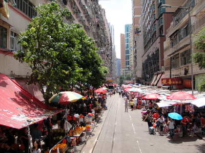
トラムは何とこんな狭い路地も通っていきます！
目の前を人が横切ったりして、乗ってる方も冷や汗ものでした。

お昼は飲茶（ヤムチャ）を食べました。
左側のは金魚型餃子です。
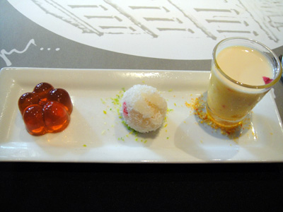
食後のデザートもオシャレ！
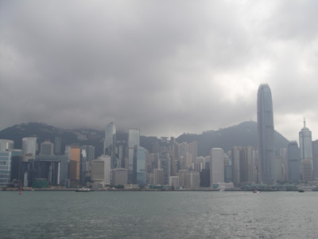
スター・フェリーに乗って再びホテル近くの尖沙咀へ。
写真からも蒸し暑さが感じられますね。
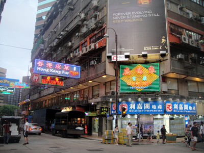
夕食は鹿鳴春というお店で中華料理を食べました。
食べるのに夢中で、すっかり写真を撮り忘れました。。
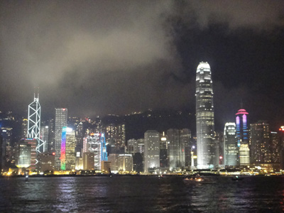
食後に再び摩天楼を見に行きました。
見事な夜景ですね～(^^)
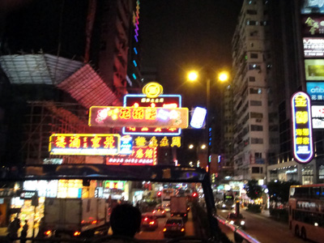
今回の一番の目玉！
名物観光となっているオープントップバスに乗りました。
２階建てバスで、屋根は付いていません。
頭上をいろんな派手な看板が流れていきます！
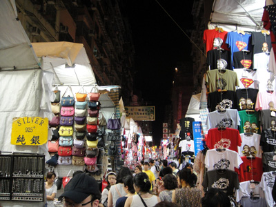
オープントップバスの目的地・女人街にて。
日本のいろんなアニメのグッズ（無許可？）も見かけました。
残念ながらミルモのは無かったです(T-T)。
2011年6月5日(日)
早くも旅行は最終日。おみやげなどの買い物をして空港へ向かいます。果たして思い出に残る買い物は出来るのでしょうか？
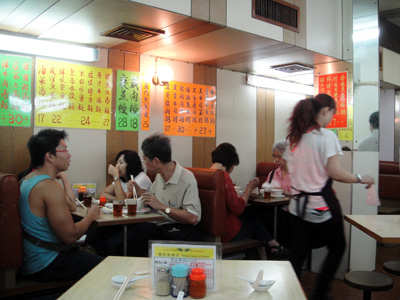
３日目の朝食は、香港名物のお粥を食べました。
お店は朝から大繁盛～。
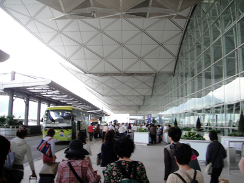
買い物を済ませ、他のツアー客と一緒に香港国際空港へ。
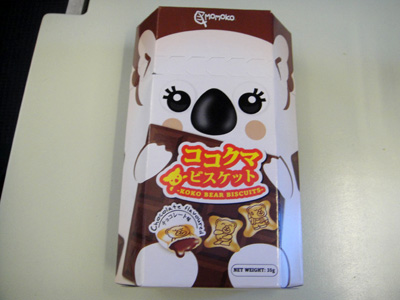
買い物の際に発見したお菓子。
カタカナが使われていて日本製のように見えますが…。
コ○ラのマ○チにそっくりです。
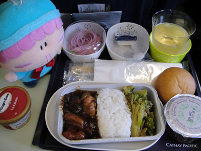
帰りの飛行機の機内食～。
蕎麦がピンク色！？
ハーゲンダッツのアイスが付いていました。
以上で香港旅行は終了ですが、おみやげの紹介をし忘れていました。
いろいろなお店に入って、しっかりミルモ度をゲットしてきましたよ！
こちらは詳細は別記事でレポしたいと思います！
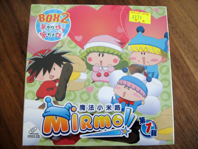
ミルモ１年目後半のVideoCD BOXを発見！
(2011/6/12)